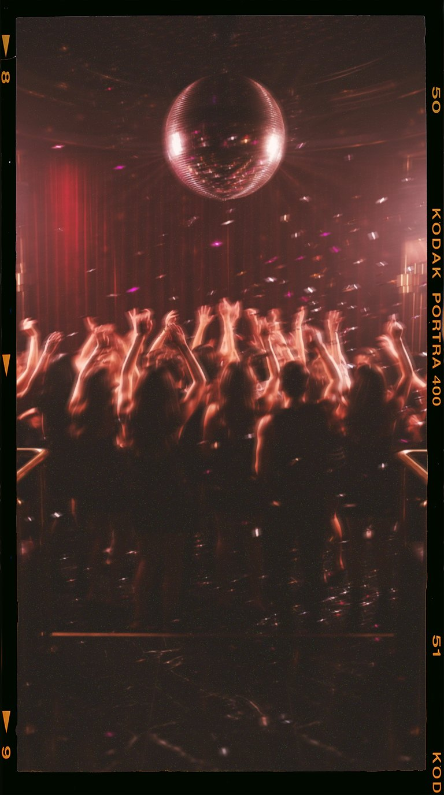

Wie is NOCTE
Draag de nacht
Born after dark. Made for the dancefloor.
NOCTE komt van nox, het Latijnse woord voor nacht. Want daar begint het voor ons: als de lichten dimmen, de bas inzet en de dansvloer volloopt. Op dat moment wil je niet verdwijnen in de massa. Je wil dat ze je opmerken, nog voor je iets gezegd hebt.
Daarom maken we geen zachte parfums voor overdag. NOCTE is zoet, warm en intens, met een spoor dat blijft hangen. Iemand ruikt je als je voorbijdanst en draait zich om. En de volgende ochtend ruiken ze je nog op hun jas.
Een uitgaansavond verloopt in hoofdstukken. Fris aan de bar, wild om middernacht, warm en loom als de zon opkomt. Daarom maakten we niet één geur, maar drie. Eén voor elk uur van de nacht.
Last one to leave. First one they remember.